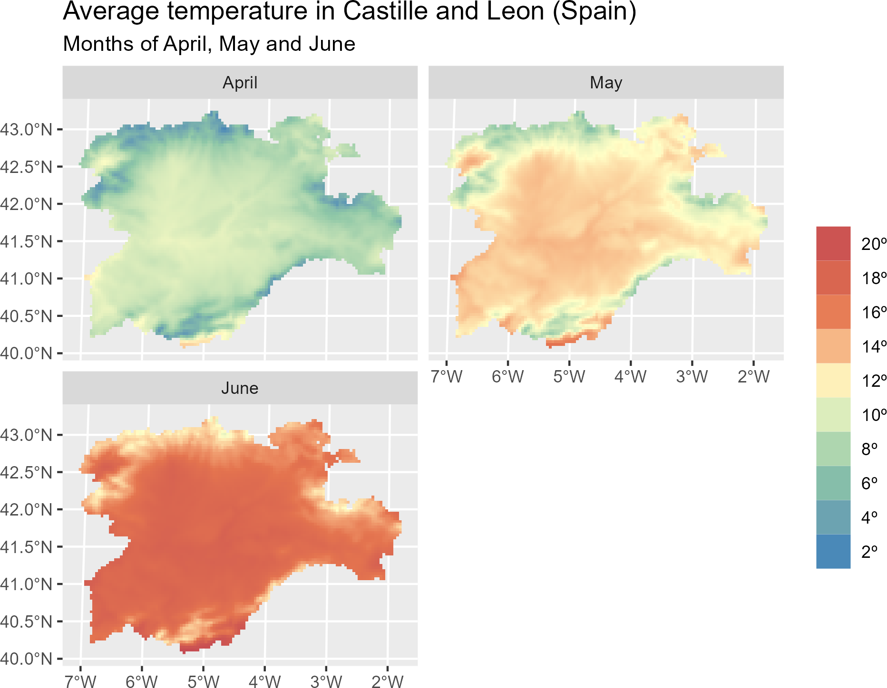
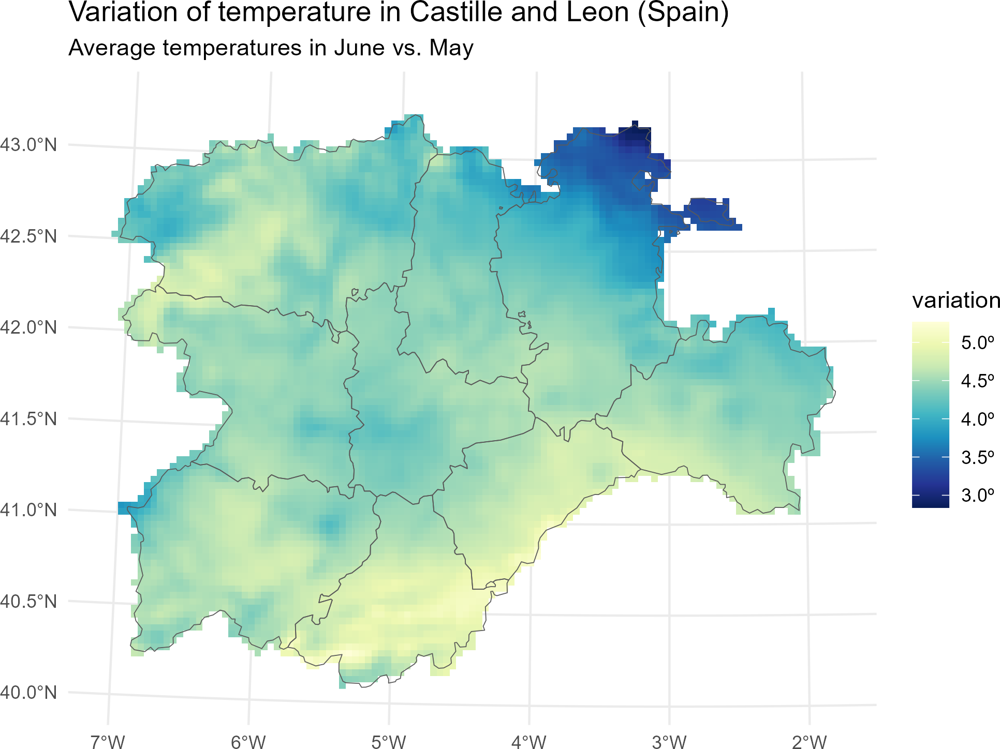
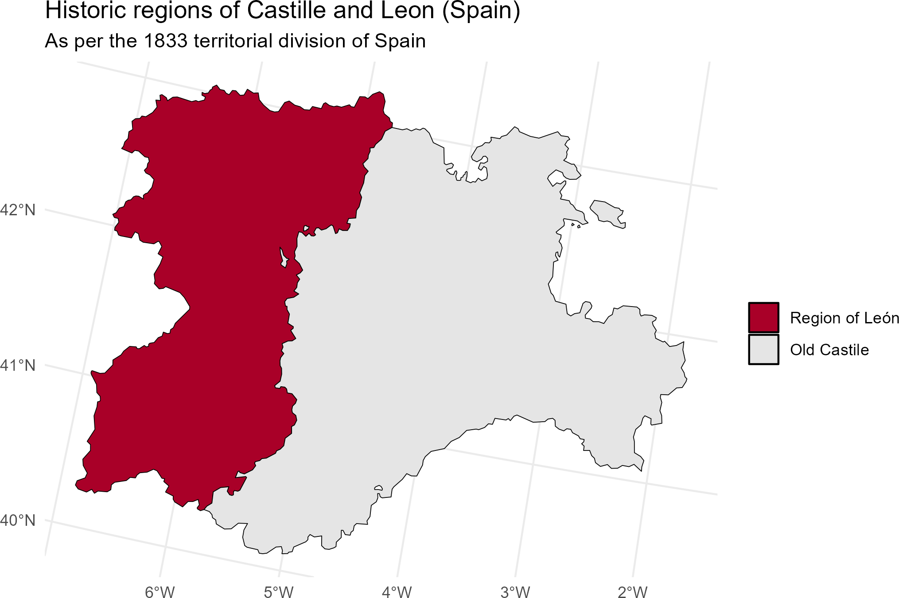

Using the tidyverse with terra objects: the tidyterra package
Diego Hernangómez1
2023-07-18
Source:vignettes/tidyterra.Rmd
tidyterra.RmdSummary
tidyterra is an R (R Core Team 2023)
package that allows manipulation of spatial data objects as provided by
the terra package (Hijmans 2023), using
the syntax of several packages included in the tidyverse (Wickham et al. 2019), such as
dplyr (Wickham et al. 2023), tidyr
(Wickham, Vaughan, and Girlich 2023), or
tibble (Müller and Wickham 2023).
Furthermore, tidyterra extends the functionality of the
ggplot2 package (Wickham 2016) by
providing additional geoms and stats 2, as well as carefully chosen scales and
color palettes specifically designed for map production.
tidyterra can manipulate the following classes of
terra objects:
SpatVectorobjects, which represent vector data such as points, lines, or polygon geometries.SpatRasterobjects, which represent raster data in the form of a grid consisting of equally sized rectangles. Each rectangle can contain one or more values.
The first stable version of tidyterra was included on
CRAN on April 24, 2022, and has been actively used by other packages
(Quoss et al. (2021), Thuiller
et al. (2023),
Bachl et al. (2019), Lacko (2023), Buller et al. (2021)) and cited in academic research
and publications (Bahlburg et al. (2023), Moraga (2023)) ever since.
Statement of need
The tidyverse is a compilation of R packages that share an underlying design philosophy, grammar, and data structures. The packages within the tidyverse are widely used by R users for tidying, transforming, and visualizing data.
The tidyverse is designed to work with tidy data (“every column
is a variable, every row is an observation, every cell is a single
value”), represented in the form of data frames or tibbles.
However, it is possible to extend the functionality of tidyverse
packages to work with new R object classes by registering the
corresponding S3 methods (Wickham
2019). This means that dplyr::mutate() can be
adapted to work with any object of class foo by creating
the corresponding S3 method mutate.foo().
While other popular packages designed for spatial data handling, such
as sf (Pebesma 2018) or stars
(Pebesma and Bivand 2023), already
provide integration with the tidyverse as part of their infrastructure,
terra objects lack this integration natively. Instead,
terra offers a wide set of functions with their own syntax
for transforming and visualizing SpatRaster and
SpatVector objects.
The tidyterra package was developed to address this
integration gap. By providing the corresponding S3 methods, data
analysts can apply the same syntax and functions they are already
familiar with for rectangular data to the objects provided by
terra. This enables users who are not familiar with spatial
data analysis to approach this area more easily.
In addition, tidyterra also offers functions for
plotting terra objects using the ggplot2
syntax. Although packages like rasterVis (Perpiñán and Hijmans 2023) and
ggspatial (Dunnington 2023)
already include similar functionality for SpatRaster
objects, tidyterra functions also support
SpatVector objects. Furthermore, tidyterra
allows users to create faceted maps for multi-layer raster files and
compute contour lines and contour-filled polygons.
Lastly, tidyterra provides a collection of color
palettes specifically designed for representing spatial phenomena (Lindsay
2018). Additionally, it implements the cross-blended
hypsometric tints described by Patterson and
Jenny (2011).
A note on performance
The development philosophy of tidyterra consists on
adapting terra objects to data frame-like structures by
performing different data transformations, that ultimately may impact in
the performance of the package.
When working with large raster files (i.e. more than 10.000.000
cells), it is recommended to use the native terra syntax,
that is specifically designed for handling this type of files.
Note also that when possible, the help page of each function of
tidyterra references its equivalent in
terra.
Examples of use
tidyterra is available on CRAN, so it can
be easily installed using the following commands in R:
install.packages("tidyterra")The following example demonstrates how to manipulate a
SpatRaster object using the dplyr syntax.
Additionally, it illustrates how to seamlessly plot a
SpatRaster object with ggplot2 using the
geom_spatraster() function:
library(tidyterra)
library(tidyverse) # Load all the packages of tidyverse at once
library(scales) # Additional library for labels
# Temperatures in Castille and Leon (selected months)
rastertemp <- terra::rast(system.file("extdata/cyl_temp.tif",
package = "tidyterra"
))
rastertemp
#> class : SpatRaster
#> dimensions : 87, 118, 3 (nrow, ncol, nlyr)
#> resolution : 3881.255, 3881.255 (x, y)
#> extent : -612335.4, -154347.3, 4283018, 4620687 (xmin, xmax, ymin, ymax)
#> coord. ref. : World_Robinson
#> source : cyl_temp.tif
#> names : tavg_04, tavg_05, tavg_06
#> min values : 1.885463, 5.817587, 10.46338
#> max values : 13.283829, 16.740898, 21.11378
# Rename with the tidyverse
rastertemp <- rastertemp %>%
rename(April = tavg_04, May = tavg_05, June = tavg_06)
# Plot with facets
ggplot() +
geom_spatraster(data = rastertemp) +
facet_wrap(~lyr, ncol = 2) +
scale_fill_whitebox_c(
palette = "muted",
labels = label_number(suffix = "º"),
n.breaks = 12,
guide = guide_legend(reverse = TRUE)
) +
labs(
fill = "",
title = "Average temperature in Castille and Leon (Spain)",
subtitle = "Months of April, May and June"
)
Figure 1: Faceted map with multi-layer raster file.
# Create maximum differences of two months
variation <- rastertemp %>%
mutate(diff = June - May) %>%
select(variation = diff)
# Add also a overlay of a SpatVector
prov <- terra::vect(system.file("extdata/cyl.gpkg", package = "tidyterra"))
ggplot(prov) +
geom_spatraster(data = variation) +
geom_spatvector(fill = NA) +
scale_fill_whitebox_c(
palette = "deep", direction = -1,
labels = label_number(suffix = "º"),
n.breaks = 5
) +
theme_minimal() +
coord_sf(crs = 25830) +
labs(
fill = "variation",
title = "Variation of temperature in Castille and Leon (Spain)",
subtitle = "Average temperatures in June vs. May"
)
Figure 2: Mapping a modified SpatRaster with an
SpatVector.
We present also a basic example of manipulating
SpatVector objects. In this example, we classify each
province based on the 1833 territorial division of Spain (Ruiz Ortíz 2011):
# Classify the regions into historic regions (1833)
prov_hist <- prov %>%
mutate(
historical = ifelse(name %in% c("Leon", "Salamanca", "Zamora"),
"Region of León",
"Old Castile"
),
# Reorder levels
historical = factor(historical,
levels = c("Region of León", "Old Castile")
)
) %>%
# Group
group_by(historical) %>%
summarise(n_prov = n())
ggplot(prov_hist) +
geom_spatvector(aes(fill = historical), color = "black") +
scale_fill_manual(values = c("#a90028", "grey90")) +
labs(
fill = "",
title = "Historic regions of Castille and Leon (Spain)",
subtitle = "As per the 1833 territorial division of Spain"
) +
theme_minimal()
Figure 3: Mapping a modified SpatVector.
Acknowledgements
I would like to thank Robert J. Hijmans for his advice and support in
adapting some of the methods, as well as for the suggestions that helped
us improve the functionalities of the package. I am also thankful to
Dewey Dunnington, Brent Thorne, and the rest of contributors of the
ggspatial package, which served as a key reference during
the initial stages of the development of tidyterra.
tidyterra also incorporates some pieces of code adapted
from ggplot2 for computing contours, which relies on the
package isoband (Wickham, Wilke, and Pedersen
2022) developed by Claus O. Wilke.